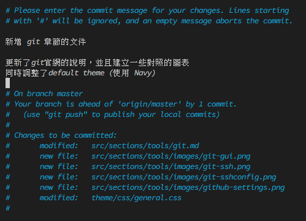

Git
Git 是一個免費和開源的分佈式版本控制系統, 旨在以速度和效率處理從小型到大型項目的所有內容
Install
請直接到 git 的官方網站 進行安裝, 如果是 Windows 的使用者, 建議可以順便安裝 git-bash 作為終端機使用
他模擬了 Linux 的 Bash, 若是同時在 Linux 與 Windows 上都有開發需求的人員, 可以統一使用 Bash 的指令
此外, 也會同時安裝 Git GUI, 這工具可以讓使用者使用圖形化介面查看 Git Repos 的資訊
不過官方也有推薦其他的工具, 比較知名的像是 SourceTree 或是 Github Desktop
SourceTree

Github Desktop

各位可以在 Git 的客戶端介紹 頁面, 看到統整的各個軟體, 找到自己喜歡的使用
筆者大部分是使用 cli 以及 Visual Studio Code 內建的 git 功能 + 額外的 plugins, 因此沒有安裝 GUI 軟體
Quick Start
官方有非常詳細的 Git 指南 供開發人員參考
倘若你從未使用過Git, 可以參考下方的資訊快速上手
| Command | 作用 |
|---|---|
| git clone <url> | 複製一個 Repos 到本地端 |
| git init | 在本地端初始化一個Git Repos |
| git add <pattern> | 追蹤符合<pattern> 的檔案 |
| git status | 列出目前的 Repos 狀態 |
| git diff | 除了列出Repos狀態外, 額外列出改變的檔案內容 |
| git commit | 提交一個變更 |
| git log | 檢視 Repos 的歷史紀錄 |
| git remote | 設定遠端的相關資訊 |
| git push <remote> <branch> | 推送變更到指定 Repos 的分支上 |
| git pull | 獲取並合併遠端 Repos 的分支 |
這裡快速列出了常用的指令, 這裡列出幾個情境：
1. 獲取遠端的Repos
舉例來說, 如果我想要下載 https://github.com/torvalds/linux 這個儲存庫
若我在 ~/workdir 這個目錄下執行指令：
git clone https://github.com/torvalds/linux
那麼便會建立 ~/workdir/hellogitworld 這個資料夾, 裡面有 linux repo 的相關資訊
也可以在 clone 時, 指定資料夾：
git clone https://github.com/torvalds/linux linux-kernel
那麼便會建立 ~/workdir/linux-kernel 這個資料夾, 裡面有 linux repo 的相關資訊
如果是要下載大型的 Repos 時, 可以加上 --depth=1 參數, 就只會抓取最新版本的紀錄
2. 建立一個遠端的Repos
比如說我現在於本地端沒有 Repos, 我想要建立一個 Repos 並上傳至託管網站(例如 github)
git init
這會初始化目前的資料夾, 作為git 的 Repos。此時可以使用 git status, 會列出尚未追蹤的檔案
這時候就可以使用 git add 追蹤檔案和 git commit 提交此次變更
git add *.cc # 追蹤所有附檔名為 ,\.cc 的檔案
git add <name> # 追蹤 <name> 這個檔案, 如果 <name> 是資料夾, 追蹤資料夾下的所有文件
git commit -m "message" # 提交變更, 並註記資訊 message
git commit -a # 提交COMMIT_MESSAGE檔案
git add 是使用 GLOB 的格式來匹配檔案的, 不過第一次提交通常使用 .gitignore 設定要忽略的檔案, 再使用 git add . 追蹤整個專案
最後透過 push 指令, 提交首次的變更到遠端上, 因為第一次要指定特定的遠端位置, 所以須透過 -u 參數來設定
git push -u <remote> <branch>
與遠端協同工作
在與提交資料到git server之前, 必須處理好有關的 git 與 ssh 資訊
如果是 windows 用戶這裡建議使用 powershell 或是 git-bash
首先到使用者的家目錄(通常是 c:/Users/<username>), 然後建立 .ssh 資料夾
在該資料夾下, 使用指令 ssh-keygen
mkdir -p ~/.ssh # 建立 .ssh 資料夾, 如果已經存在可以忽略
cd ~/.ssh # 建立 .ssh 資料夾, 如果已經存在可以忽略
ssh-keygen # 建立 RSA Key-pair, 可使用 -t 選擇其他加密法
接下來會問你生成的金鑰名稱以及 Passphrase, Passphrase 可以忽略沒關係
金鑰名稱若沒有設定, 預設會是 id_rsa, 或是加密法的名稱, 例如使用 -t ed25519 預設名稱就會是 id_25519
若使用預設名稱, 應該會生成 id_rsa 跟 id_rsa.pub 兩個檔案
接下來, 假設你是 github 用戶, 請登入後點擊右上方的圖像, 找到 Settings 這個分類, 並找到 Access / SSH and GPG Keys 這個選項後, 點擊右上方的 New SSH Key, 會看到該畫面：
Title 可以輸入足夠你辨識的資訊即可；而Key 則輸入 id_rsa.pub 的內容
完成後儲存, 回到終端機, 嘗試對 github 進行 SSH 登入：
-i 參數是設定使用的金鑰 -T 則是告知 github, 不需要分配一個終端機
通常 ssh-keygen 產生的金鑰對都會是 <name> 跟 <name>.pub, 分別是私鑰跟公鑰
公鑰提供給 github 或是 gitlab, 私鑰則用來登入。上圖中的紅框處, 應該要是你的github 名稱
ssh config
如果每次都要這樣處理, 會顯得過於麻煩, 因此可以使用 ssh config 設定登入資訊
在 ~/.ssh 目錄下, 建立一個 Config 檔案, 內容輸入：
Host github
HostName github.com
User git
IdentityFile ~/.ssh/id_rsa
Host 是供你辨識的連線名稱 HostName 用來設定伺服器的位置, 可以是網域或是 ip User 是登入的用戶名稱 IdentityFile 則是私鑰的檔案位置
當設定好 .ssh/config 的資訊, 可以嘗試用 Host 連線, 比方說
ssh github

就會發現可以順利連線, 當然 ssh config 可以設定多組資訊, 比方說：
Host github-alex
HostName github.com
User git
IdentityFile ~/.ssh/alex
Host github-benson
HostName github.com
User git
IdentityFile ~/.ssh/benson
Host gitlab-howard
HostName github.com
User git
IdentityFile ~/.ssh/howard
因為本質是用來進行 ssh 登入的, 因此也可以設定給 Linux 主機做登入資訊, 但是這裡不細談
以上的做法, 適用於 windows/linux, 範例中使用 github, 但是 gitlab也有同樣的機制
與遠端交互
最後一個階段, 要來設定 git remote, 不管在 github 還是 gitlab 上, 你的Repos 通常會在 /<username>/<repo-name> 這個路徑, 例如前面提到的https://github.com/torvalds/linux, username就是torvalds, repo-name則是linux
因此, 若你是Repos的創建者, 請先到 github 建立一個repos, 假設你的名字叫做foo而且repo-name是bar, 那你的repos URL 應該是 https://github.com/foo/bar
此時要設定 git remote 的資訊, 請使用
# git remote add <name> <url>
git remote add origin https://github.com/foo/bar
通常 name 會使用 origin, url 則是你的 repo 位置, 但是這裡考慮到未來push/pull 會需要驗證, 所以建議把 url 改成 ssh config 的資訊, 例如
git remote add origin github:foo/bar
其實在 github, clone 時會給你選 https , ssh , github-cli 三種方式, ssh 給你的URL會是 git@github.com:<username>/<repo>.git 只需要把 ssh config 的 host 替換 git@github.com 即可, 這在 gitlab 或是其他託管網站應該都是一樣的
最後使用
git push -u origin master
把東西推上 origin(= github:foo/bar) 的 master 分支上
開發流程
因為這個文件是給 git 新手看的文件, 因此 merge / branch 等遠端合作的注意事項, 建議直接看 Gitlab Flow 或是 git flow、github flow 等資料
Git Flow 的邏輯是
- 有個主要的分支, 比方說
master或是release放置目前運行或是發行出去的版本 - 同時會有個開發分支
develop, 主要的工作會在該分支上進行 - 有新的需求時, 從
developfork 新的feature-<name>分支- 登入/登出/會員功能 fork
feature-authorization分支 - UI優化 fork
feature-UI分支 - 照片上傳功能 fork
feature-photo-upload分支
- 登入/登出/會員功能 fork
- 完成功能後, merge 回去
develop分支 - 當有個BUG需要緊急處理的時候, 從
master分支 forkbugfix- 一定要從
master分支 fork, 因為develop分支可能還會有些開發中、不穩定的功能 - 修復bug完成後, 合併到
master跟develop分支(若沒有合併回develop, 下個版本進入master時, 該bug又會出現)
- 一定要從
- 可能會建立
release分支, 通常是上線前的最後測試
而 gitlab flow 與 github flow , 都是在此情況下進行簡化/修改, 重點都是著重在區分開發中 和 穩定 功能的分支, 依照團隊情況使用即可
Commit Message
如果專案只有你自己一個人, 那麼 Commit Message 只要寫你看得懂的格式就好
但是當團隊進行合作時, 建議要討論好 commit message 的格式, 通常都會拆成
<Header> - 摘要本次變更的內容
(option)<Body> - 詳細說明本次變更的內容
(option)<Footer> - 額外的註記
每個段落都會用 \n 隔開, 一個良好的範例是：

簡單來說, Header作為摘要不要過長； Body則可以描述這次提交你做了什麼；Footer是個可選的區塊, 未必要填寫, 如果有使用 Redmine 之類的專案管理軟體, 可以註記 issue 編號
筆者認為, commit message 未必要寫得非常專業, 以 Google 的範例來說, 他們的 Header 會分成 chore, deprecate, feat, fix, release 五種
分別去對應
- chore - 一些自動化/例行的任務之類的
- deprecate - 註記一些功能是應該被淘汰的
- feat - 新增一個新的功能
- fix - 修復一些錯誤或bug
- release - 一些與版本有關的註記
當然, 也有更複雜的區分, 例如：
- feat: 新的功能
- fix: 修復錯誤
- docs: 程式碼文件相關的修改(CHANGELOG、README、或是其他文件等)
- style: 不影響程式的邏輯, 調整原始碼(code format, 空格數量、加上遺漏的分號等)
- refactor: 不添加新功能或是修復bug的情況, 重構程式碼(可能是拆分成更小的模組、又更優美的寫法...等)
- perf: 效能改善, 或者是添加一些追蹤效能的程式碼
- test: 新增測試文件
- ci: 對於CI相關設定的調整
Header 也可能加上修改的scope, 可能是功能/或是某個模組之類的
feat($browser): add onUrlChange event (popstate/hashchange/polling)
New $browser event:
- forward popstate event if available
- forward hashchange event if popstate not available
- do polling when neither popstate nor hashchange available
Breaks $browser.onHashChange, which was removed (use onUrlChange instead)
fix($compile): add unit tests for IE9
Older IEs serialize html uppercased, but IE9 does not... Would be better to expect case insensitive, unfortunately jasmine does not allow to user regexps for throw expectations.
Closes #392 Breaks foo.bar api, foo.baz should be used instead
這樣在 git log --oneline 時, 可以清楚看到如：
2d0e1ea feat($browser): add onUrlChange event (popstate/hashchange/polling)
a2cc062 fix($compile): add unit tests for IE9
3f1cbb7 feat(directive): add directives disabled/checked/multiple/readonly/selected
e717ffc style($location): add couple of missing semi colons
b62050d docs(guide): update fixed docs from Google Docs
ea303d0 feat($compile): simplify isolate scope bindings
7f5cdfc initial commit
而當透過 git log 查看紀錄的時候, 更快速檢閱相關的變更
反過來說, 如果哪天需要追查特定的bug, 或是想理解軟體開發脈絡的時候, 看到如下的紀錄：
2d0e1ea update
a2cc062 commit
3f1cbb7 fix
e717ffc commit
b62050d update
ea303d0 update
7f5cdfc initial commit
看起來很荒謬對吧？ 但是這樣寫的人其實很多, 這才是最可怕的事情
Body 跟 Footer 先不論, 甚至有沒有寫先不管, 至少在 Header 的部分, 要好好摘要你做了哪些事情
因此希望各位, 至少先從"寫好 commit" 這件事情開始學